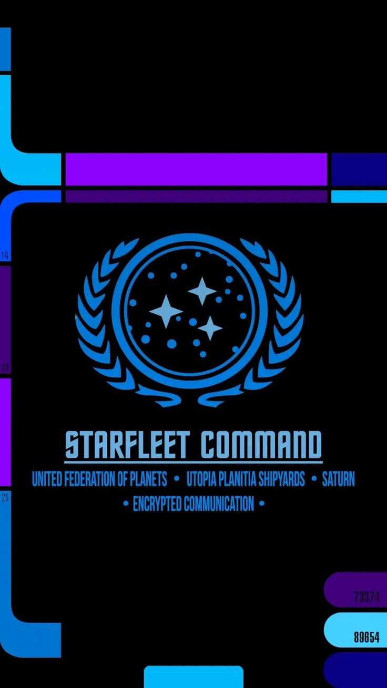

✥
CHART THE KNOWN & UNKNOWN
The World Atlas
Maps, regions, peoples, borders and the lands beyond the edge of the map.
GEOGRAPHY · EXPLORATION · DISCOVERYA quiet place to plan bold adventures, keep your worlds in order, and prepare for the next session.
A realm of kingdoms, ancient lore and untold adventures. Chronicle your world, its peoples, its history and the heroes who shape its fate.

Five halls. Countless paths. One world waiting to be written.
Maps, regions, peoples, borders and the lands beyond the edge of the map.
GEOGRAPHY · EXPLORATION · DISCOVERYKingdoms, rulers, noble houses, rivalries, treaties and succession.
HOUSES · ALLIANCES · INTRIGUEAncient history, myths, magic, creatures, relics and forbidden knowledge.
LORE · MAGIC · MEMORYCharacters, companions, quests, session records and the choices that shape a legend.
HEROES · QUESTS · LEGACYEnemies, lost kingdoms, ancient threats and the darkness gathering at the borders.
DANGER · MYSTERY · CONFLICTTwo ancient orders. One living Force. The fate of the galaxy hangs in the balance.
Wisdom · Discipline · Guardianship
Power · Passion · Knowledge
The balance is never fixed. Every alliance, betrayal and choice can move the galaxy toward light — or darkness.
Create a campaign to start organizing its world, characters and adventures.
A campaign-wide briefing of the people, places, stories and sessions in your realm.
Create a campaign or select another universe to begin organizing your world.
Keep every adventure, setting and story in one place.
Build your cast once. Carry their stories and visual identities throughout every session and illustrated chronicle.
Keep biographies, appearances, equipment and reference portraits together. These records will become the foundation for consistent artwork in your campaign chronicles.
Create a campaign before adding its heroes, allies, rivals and memorable strangers.
Create artwork with the tools you choose, then bring it home to your campaign.
Open an image creator in a new tab, make your artwork, download it, then upload it here. Your campaign gallery keeps the finished images together with your local campaign records.
These services open separately. Generate and download your image, then return here to add it to your campaign.
Quick character portraits and imaginative fantasy artwork.
Open Perchance ↗Create and refine original images through conversation.
Open ChatGPT ↗Explore character-focused generation and visual references.
Open CharGen ↗Character-oriented artwork and tabletop creation tools.
Open D&D Playbook ↗Experiment with different models and illustration styles.
Open NightCafe ↗Explore AI RPG and story-generation experiments.
AI RPG ↗ Story Generator ↗External services have their own accounts, terms, availability and usage limits. Game Master's Keep does not send your campaign data to them automatically.
Keep approved portraits, maps and illustrations with the campaign they belong to.
Create a campaign before adding artwork.
Record the events of each session. Every entry becomes part of your campaign's lasting chronicle.
Keep a record as you play, then assemble your campaign into a print-ready story when the adventure is complete.
Create a campaign before adding session records.
Develop an adventure framework, connect it to your campaign cast and creatures, then carry the plan into your session records and campaign chronicle.
Build an original premise, define the people and threats involved, and keep locations, complications and rewards together. This is a planning framework, not an automatically written finished story.
Create a campaign before building an adventure.
Keep settlements, landmarks, organizations and their relationships connected to each campaign.
Record the places people inhabit, the groups competing for influence, and the ties that connect them. Entries are campaign-specific and remain in your local browser data.
Create a campaign before building its world.
Connect places, factions, NPCs, creatures and adventures. These links belong to this campaign and can be revised as your story changes.
Deleting a place, faction, NPC, creature or adventure does not silently delete your other campaign records; links to removed records are flagged here so you can clean them up.
Upload your own regional, city, dungeon or world maps. Place markers and connect them to entries in your campaign atlas. Maps are stored locally with this campaign.
Create your map elsewhere, export an image, then bring it into your campaign atlas below. These are independent third-party services; their free features and terms may change.
Illustrated fantasy world, regional, city and battle maps. Offers a free plan with limited assets and exports.
Open Inkarnate ↗Generate worlds with terrain, states, cultures, borders and settlements. Free and open source.
Open Azgaar ↗Quickly draw dungeon rooms, corridors and encounter layouts. Core tools are available free.
Open Dungeon Scrawl ↗Generate medieval-style city plans with streets, districts and landmarks.
Open Watabou ↗Upload a map above to begin placing locations.
Choose a map, then click anywhere on the image to place a marker. You can link it to a saved place or add a freeform note.
A searchable home for rules references and game knowledge.
Browse the 2014 fifth-edition rules for The Chronicles of Puma, with expanded spells, equipment, and creature references.
Describe a rules question or situation. The assistant searches the current 2014 5E reference index and points you toward relevant topics.
This is a reference finder, not an automated rules judge. Check the cited source and use your table's ruling where a situation is unclear. Summaries are original explanations, not reproduced rulebook text.
Content note: These are original quick-reference explanations, not reproductions of the Player’s Handbook or Dungeon Master’s Guide. Source labels identify relevant books or the 2014 Basic Rules. Personal book references and other editions will be handled separately. The public library uses original summaries and appropriately licensed reference material. Spell and creature reference entries are based on the 2014 rules and SRD 5.1 (CC BY 4.0); attribution: Wizards of the Coast, System Reference Document 5.1, Creative Commons Attribution 4.0 International.
Small utilities for the moments when the table needs them.
Build an encounter, roll initiative, and keep every combatant's turn and resources in view.
Choose your dice, set your modifier, and let them fall.
Dice rolls are generated locally in this browser. Roll history is temporary and clears when you refresh the page.
Practical preparation tools for building adventures, populating your world, and judging encounters at the table.
Build a starting situation with a problem, a stake, and a complication.
Generate a non-player character with a role, motive, manner, and hidden complication.
Discover a location, its former purpose, what remains, and what now threatens it.
Estimate encounter difficulty using party levels, monster challenge ratings, and the 2014 XP thresholds.
This is an estimate, not a guarantee of balance. Terrain, monster abilities, magic items, player experience, and party composition can change the encounter significantly.
Save generated ideas here for the current browser. These notes are local to this device and are not shared with players.
Build the inhabitants and threats of your world, then bring them together for encounter preparation.
Based on SRD 5.1 (CC BY 4.0). Attribution: Wizards of the Coast, System Reference Document 5.1, Creative Commons Attribution 4.0 International.
Manage character spells, prepared magic, equipment, treasure and resources in one campaign workspace.
Add spells from the reference library, then mark which ones are prepared.
Track maximum slots and slots expended. These values are manually managed.
Track quantity, equipment status, and carried treasure for this character.
Concise reference summaries from the existing SRD 5.1 rules library.
SRD 5.1 material is licensed under CC BY 4.0. Attribution: Wizards of the Coast, System Reference Document 5.1, Creative Commons Attribution 4.0 International.
Weapons, armor, shields and adventuring gear available in the reference index.
SRD 5.1 material is licensed under CC BY 4.0. Attribution: Wizards of the Coast, System Reference Document 5.1, Creative Commons Attribution 4.0 International.
Create original magic items, rewards, consumables and campaign-specific equipment.
Keep maps, portraits, character sheets, chronicles and other campaign files organized by universe.
Upload files to the matching folder in your GitHub repository, then register their paths here. Game Master's Keep will open the hosted files whenever you need them.
Add your first hosted file using the form.
Files are hosted by your GitHub Pages site. This catalog is saved locally in this browser; export it periodically as a backup. Do not upload private or sensitive material to a public repository.
Manage your local prototype data and keep a portable copy.
Export your campaign data as a JSON file. You can import it again in this browser or another copy of the app.
Storage: This browser's local storage
Network: No account or server connection in this prototype
Recurring cost: $0
Clearing browser data may erase campaigns that have not been exported. Keep regular backups.